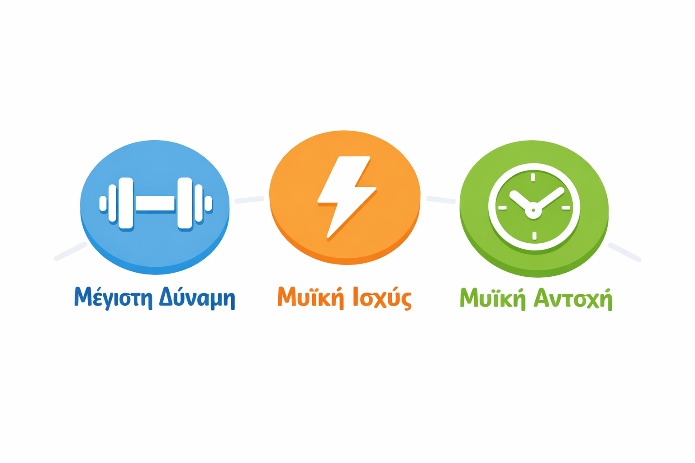
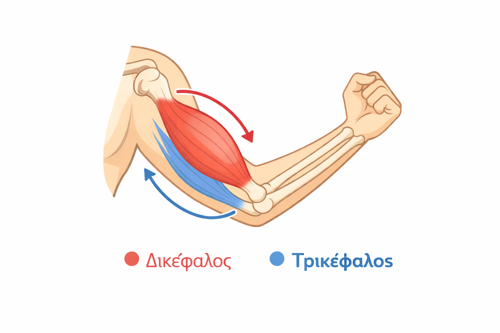
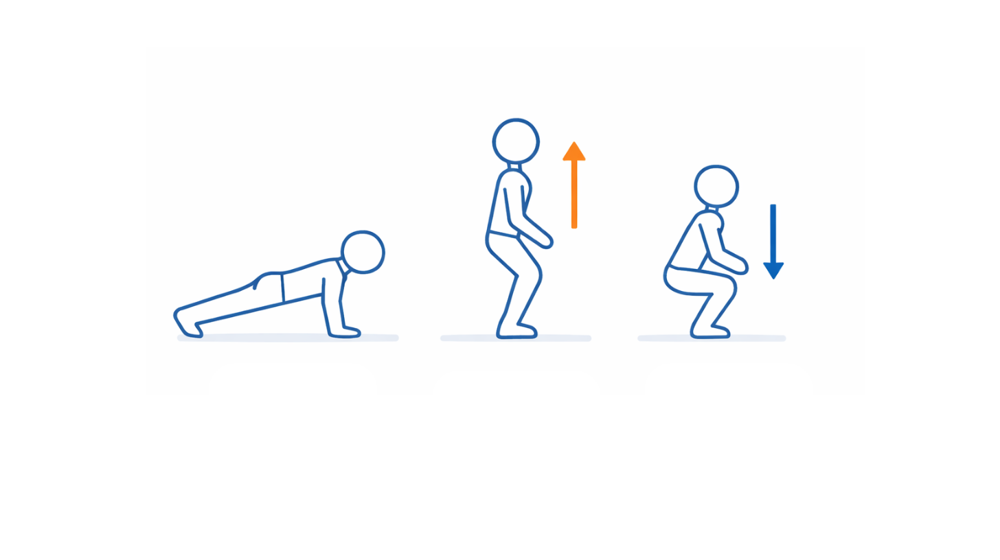
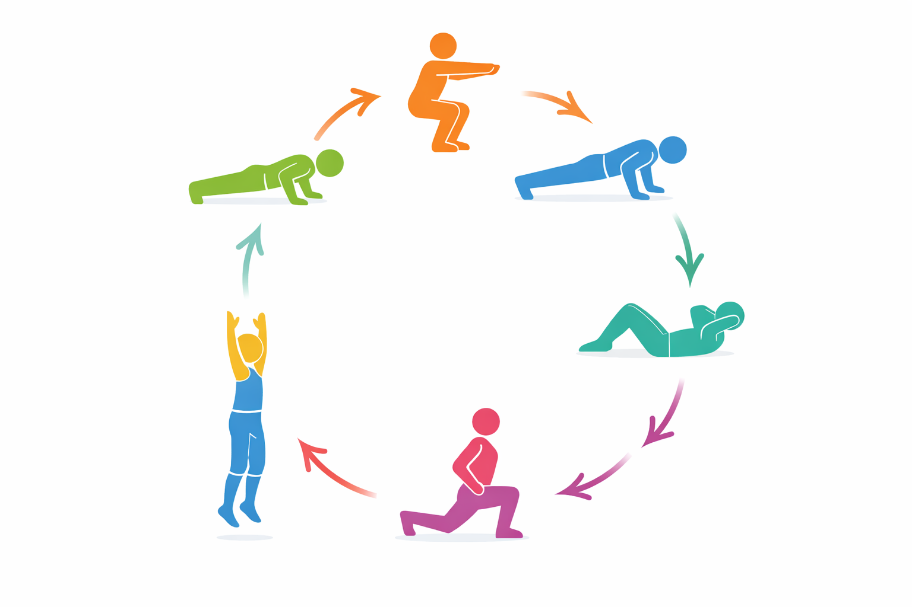

Εισαγωγή
Η μυϊκή δύναμη είναι μία από τις βασικότερες παραμέτρους της φυσικής κατάστασης και παίζει καθοριστικό ρόλο τόσο στην αθλητική απόδοση όσο και στην καθημερινή ζωή και την υγεία σου. Η συστηματική της ανάπτυξη από νεαρή ηλικία έχει αποδεδειγμένα οφέλη: ενισχύει τα οστά, βελτιώνει τη στάση του σώματος, μειώνει τον κίνδυνο τραυματισμών και συμβάλλει στην ψυχολογική ευεξία. Σε αυτό το υλικό θα γνωρίσεις τις μορφές της μυϊκής δύναμης, τα είδη μυϊκής δραστηριότητας, τις μεθόδους προπόνησης και τον τρόπο που μπορείς να οργανώσεις αποτελεσματικά την άσκησή σου.

Μορφές Μυϊκής Δύναμης
Η μυϊκή δύναμη δεν είναι μία ενιαία ικανότητα. Διακρίνεται σε τρεις βασικές μορφές, ανάλογα με τον τρόπο εκδήλωσής της.
Μέγιστη Δύναμη
Είναι η μεγαλύτερη δύναμη που μπορεί να αναπτύξει το νευρομυϊκό σύστημα κατά τη διάρκεια μίας μέγιστης εκούσιας σύσπασης. Αποτελεί τη «βάση» πάνω στην οποία χτίζονται οι υπόλοιπες μορφές δύναμης.
Παράδειγμα: Η μέγιστη αντίσταση που μπορείς να σηκώσεις μία μόνο φορά σε μία άσκηση (π.χ. squat, press).
Μυϊκή Ισχύς (Εκρηκτική Δύναμη)
Είναι η ικανότητα του μυϊκού συστήματος να αναπτύσσει μεγάλη δύναμη στο μικρότερο δυνατό χρονικό διάστημα. Εκφράζεται ως: Ισχύς = Δύναμη × Ταχύτητα.
Παράδειγμα: Άλμα σε ύψος, ρίψη μπάλας, σπριντ.
Μυϊκή Αντοχή
Είναι η ικανότητα του μυός ή της μυϊκής ομάδας να παράγει δύναμη επανειλημμένα ή να διατηρεί μία συγκεκριμένη σύσπαση για παρατεταμένο χρονικό διάστημα, χωρίς σημαντική μείωση της απόδοσης.
Παράδειγμα: Κάμψεις (push-ups) για πολλές επαναλήψεις, σανίδα (plank) για χρόνο.
Είδη Μυών ανάλογα με τη λειτουργία τους
Κατά την εκτέλεση μίας κίνησης, οι μύες δεν εργάζονται μεμονωμένα, αλλά σε λειτουργικά ζεύγη.
Συναγωνιστές (Αγωνιστές) Μύες
Είναι οι μύες που συσπώνται ενεργά για να πραγματοποιήσουν την επιθυμητή κίνηση. Ονομάζονται και πρωταγωνιστές.
Παράδειγμα: Κατά την κάμψη του αγκώνα (π.χ. curl), ο δικέφαλος βραχιόνιος είναι ο αγωνιστής.
Ανταγωνιστές Μύες
Είναι οι μύες που βρίσκονται στην αντίθετη πλευρά από τους αγωνιστές και χαλαρώνουν ελεγχόμενα για να επιτρέψουν την κίνηση, ενώ παράλληλα διασφαλίζουν τον έλεγχο και την ασφάλεια της άρθρωσης.
Παράδειγμα: Κατά την κάμψη του αγκώνα, ο τρικέφαλος είναι ο ανταγωνιστής.
Ισόρροπη Ανάπτυξη – Αμφιπλευρική Ενδυνάμωση
Η ισόρροπη ανάπτυξη συναγωνιστών και ανταγωνιστών μυών είναι απαραίτητη για:
- Πρόληψη τραυματισμών (μυϊκές κακώσεις, προβλήματα αρθρώσεων).
- Σωστή στάση σώματος.
- Αρμονική κινητική απόδοση.
Εξίσου σημαντική είναι η αμφιπλευρική μυϊκή ενδυνάμωση: η ισόρροπη ανάπτυξη των αντίστοιχων μυϊκών ομάδων και στα δύο μέρη του σώματος (δεξί–αριστερό). Αν π.χ. εξασκείς μόνο το δεξί χέρι, δημιουργείς μυϊκή ασυμμετρία που αυξάνει τον κίνδυνο τραυματισμού.
Παράδειγμα Ισόρροπης Ανάπτυξης
Παράδειγμα ισόρροπης ανάπτυξης:
| Μυϊκή Ομάδα | Αγωνιστής | Ανταγωνιστής |
|---|---|---|
| Κορμός | Κοιλιακοί | Ραχιαίοι |
| Μηρός | Τετρακέφαλος | Οπίσθιοι μηριαίοι |
| Βραχίονας | Δικέφαλος | Τρικέφαλος |
| Ώμος | Πρόσθιο δελτοειδές | Οπίσθιο δελτοειδές |

Είδη Μυϊκής Δραστηριότητας
Ισομετρική Άσκηση
Ανάλογα με το αν ο μυς αλλάζει μήκος κατά τη σύσπασή του, διακρίνουμε τρία είδη μυϊκής δραστηριότητας.
Ο μυς συσπάται και αναπτύσσει δύναμη χωρίς να αλλάζει το μήκος του και χωρίς να υπάρχει κίνηση στην άρθρωση.
Χαρακτηριστικά:
- Δεν παράγεται εμφανής κίνηση.
- Η δύναμη ασκείται ενάντια σε αμετακίνητη αντίσταση.
Παραδείγματα ασκήσεων: Σανίδα (plank), γέφυρα (bridge), στατικό squat τοίχου, σφίξιμο χειρολαβής.
Πότε χρησιμοποιείται:
Κυρίως για σταθεροποίηση, αποκατάσταση τραυματισμών και ανάπτυξη δύναμης σε συγκεκριμένη γωνία άρθρωσης.
Είδη Μυϊκής Δραστηριότητας
Πλειομετρική & Μειομετρική Άσκηση
Πλειομετρική Άσκηση (Κεντρική Σύσπαση)
Ο μυς συσπάται ενώ βραχύνεται (μικραίνει σε μήκος). Αυτό συμβαίνει στη φάση ανύψωσης ή ώθησης μίας άσκησης.
Παραδείγματα: Άνοδος στο squat (οι τετρακέφαλοι βραχύνονται), φάση ανύψωσης στις κάμψεις (push-up), κάμψη αγκώνα με βάρος (curl – φάση ανύψωσης).
Μειομετρική Άσκηση (Έκκεντρη Σύσπαση)
Ο μυς αναπτύσσει δύναμη, ενώ επιμηκύνεται (μεγαλώνει σε μήκος). Αυτό συμβαίνει συνήθως στη φάση επιστροφής/κατεβάσματος μίας άσκησης.
Παραδείγματα: Κατεβαίνοντας στο squat (τετρακέφαλοι επιμηκύνονται ελεγχόμενα), φάση κατεβάσματος στις κάμψεις, κατεβαίνοντας αργά βάρος στο curl.
Απεικόνιση Κινήσεων & Μέθοδοι Προπόνησης

Στις περισσότερες ασκήσεις με βάρος ή αντίσταση, εκτελούνται και οι δύο φάσεις (πλειομετρική + μειομετρική) σε κάθε επανάληψη.
Μέθοδοι Προπόνησης Δύναμης
Η επιλογή μεθόδου εξαρτάται από τον στόχο που θέλεις να επιτύχεις. Χρησιμοποιείται η φόρμουλα FITT για τον σχεδιασμό κάθε προπόνησης:
- Frequency (Συχνότητα): πόσες φορές την εβδομάδα.
- Intensity (Ένταση): πόσο δύσκολη είναι η άσκηση (% μέγιστης δύναμης, αριθμός επαναλήψεων).
- Time (Χρόνος/Διάρκεια): διάρκεια κάθε προπόνησης.
- Type (Είδος): τύπος άσκησης.
Μέθοδοι Προπόνησης Δύναμης
Μέθοδος για Μυϊκή Αντοχή
| Παράμετρος | Συνιστώμενη τιμή (για εφήβους/ες Γυμνασίου) |
|---|---|
| Ένταση | Χαμηλή–μέτρια (40–60% μέγιστης δύναμης) |
| Επαναλήψεις | 15–20+ ανά σετ |
| Σετ | 2–3 |
| Ταχύτητα εκτέλεσης | Μέτρια, ελεγχόμενη |
| Διάλειμμα | 30–60 δευτερόλεπτα μεταξύ σετ |
| Είδος ασκήσεων | Ασκήσεις με το σωματικό βάρος, λάστιχα, μικρά βάρη |
| Συχνότητα | 2–3 φορές/εβδομάδα |
Ενδεικτικές ασκήσεις:
Κάμψεις (push-ups), καθίσματα (squats), κοιλιακοί, lunges, σανίδα με χρονόμετρο.
Μέθοδοι Προπόνησης Δύναμης
Μέθοδος για Μυϊκή Ισχύ (Εκρηκτική Δύναμη)
| Παράμετρος | Συνιστώμενη τιμή (για εφήβους/ες Γυμνασίου) |
|---|---|
| Ένταση | Μέτρια–υψηλή (50–70% μέγιστης δύναμης) |
| Επαναλήψεις | 6–10 ανά σετ |
| Σετ | 3–4 |
| Ταχύτητα εκτέλεσης | Γρήγορη, εκρηκτική στη φάση ώθησης |
| Διάλειμμα | 90–120 δευτερόλεπτα μεταξύ σετ |
| Είδος ασκήσεων | Plyometric, άλματα, ρίψεις, ασκήσεις με αντίσταση |
| Συχνότητα | 2 φορές/εβδομάδα |
Ενδεικτικές ασκήσεις:
Άλματα σε βάθος (box jumps), σκιπ, ρίψη medicine ball, squat jump, burpees.
Μέθοδοι Προπόνησης Δύναμης
Μέθοδος για Μέγιστη Δύναμη
| Παράμετρος | Συνιστώμενη τιμή (προσαρμοσμένη για έφηβους/ες Γυμνασίου) |
|---|---|
| Ένταση | Μέτρια–υψηλή (60–75% εκτιμώμενης μέγιστης) |
| Επαναλήψεις | 6–8 ανά σετ |
| Σετ | 3 |
| Ταχύτητα εκτέλεσης | Ελεγχόμενη και στις δύο φάσεις |
| Διάλειμμα | 2–3 λεπτά μεταξύ σετ |
| Είδος ασκήσεων | Ασκήσεις με το σωματικό βάρος, αντίσταση ελαστικού, ελαφρά βάρη |
| Συχνότητα | 2 φορές/εβδομάδα |
Ενδεικτικές ασκήσεις:
Βαθύ κάθισμα με ελαφρύ βάρος, push-ups με αντίσταση, pull-ups, deadlift με ελαφρύ βάρος.
Μορφές Οργάνωσης της Προπόνησης Δύναμης
Κυκλική Προπόνηση (Circuit Training)
Ανάλογα με τον στόχο και το επίπεδο του/της ασκούμενου/ης η προπόνηση μπορεί να οργανωθεί με διαφορετικούς τρόπους.
Τι είναι: Εκτελείς διαδοχικά μία σειρά από ασκήσεις (σταθμοί), χωρίς ή με ελάχιστο διάλειμμα μεταξύ τους. Το κύκλωμα επαναλαμβάνεται 2–4 φορές.
Ιδανική για: Μυϊκή αντοχή, καρδιοαναπνευστική βελτίωση, απώλεια λίπους.
Παράδειγμα κυκλώματος (6 σταθμοί × 30 δευτερόλεπτα, 15 δευτερόλεπτα διάλειμμα):
- Squat
- Push-ups
- Κοιλιακοί (crunches)
- Lunges
- Σανίδα (plank)
- Burpees

Μορφές Οργάνωσης της Προπόνησης Δύναμης
Εξάσκηση σε Σταθμούς & Ενότητες
Εξάσκηση σε Σταθμούς (Station Training)
Τι είναι: Παρόμοια με την κυκλική, αλλά κάθε σταθμός επικεντρώνεται σε συγκεκριμένη μυϊκή ομάδα ή δεξιότητα. Το διάλειμμα μεταξύ σταθμών είναι μεγαλύτερο για πλήρη αποκατάσταση.
Ιδανική για: Στοχευμένη ανάπτυξη μυϊκής δύναμης ή ισχύος, σε συγκεκριμένες μυϊκές ομάδες.
Παράδειγμα (4 σταθμοί, 3 σετ × 8 επαναλήψεις, 2 λεπτά διάλειμμα):
- Σταθμός Α: Squat (κάτω άκρα)
- Σταθμός Β: Push-ups (στήθος–τρικέφαλος)
- Σταθμός Γ: Κωπηλασία με λάστιχο (ράχη–δικέφαλος)
- Σταθμός Δ: Planks / γέφυρα (κορμός)
Εξάσκηση σε Ενότητες (Set Training / Straight Sets)
Τι είναι: Εκτελείς όλα τα σετ μίας άσκησης πριν προχωρήσεις στην επόμενη. Είναι η πιο κλασική μέθοδος οργάνωσης.
Ιδανική για: Ανάπτυξη μέγιστης δύναμης ή μυϊκής υπερτροφίας, όταν απαιτείται εστίαση σε μία μυϊκή ομάδα.
Παράδειγμα:
- Squat: 3 σετ × 8 επαναλήψεις → διάλειμμα 2–3 λεπτά μεταξύ σετ
- Push-ups: 3 σετ × 10 επαναλήψεις → διάλειμμα 2 λεπτά
- Κωπηλασία: 3 σετ × 10 επαναλήψεις → διάλειμμα 2 λεπτά
Μέσα (Εξοπλισμός) Προπόνησης Δύναμης
| Μέσο | Παραδείγματα | Κατάλληλο για |
|---|---|---|
| Σωματικό βάρος | Push-ups, squats, pull-ups, plank | Αντοχή, ισχύς, βασική δύναμη |
| Ελαστικά λάστιχα | Rows, press, curl με λάστιχο | Αντοχή, δύναμη, αποκατάσταση |
| Αλτήρες / ελαφρά βάρη | Bicep curl, shoulder press | Δύναμη, ισχύς, υπερτροφία |
| Medicine ball | Ρίψεις, στρέψεις κορμού | Ισχύς, λειτουργική δύναμη |
| Σχοινί (jump rope) | Άλματα ρυθμού | Αντοχή, ισχύς |
| Γυμναστική όργανα | Μονόζυγο, δίζυγο, μπάρα | Δύναμη, υπερτροφία |
| TRX / κρεμαστές ταινίες | Rows, push-ups με TRX | Λειτουργική δύναμη, σταθεροποίηση |